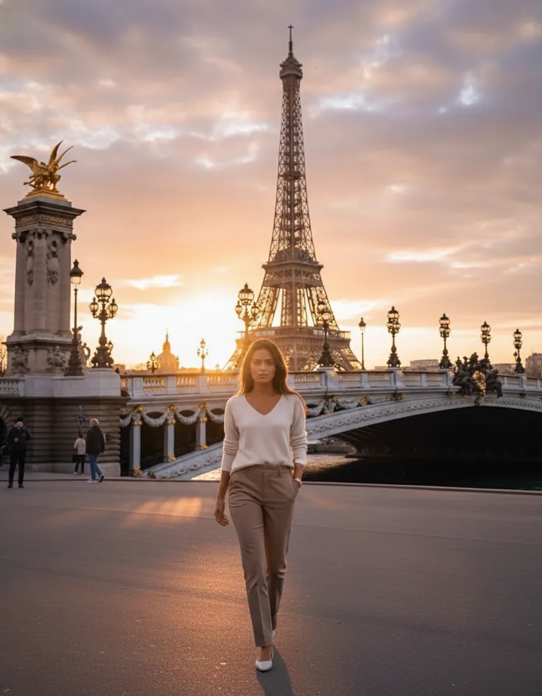

Pack Patisserie
Explorez des scènes et des ambiances autour de Patisserie. Personnalisez la collection avec votre personnage et préparez de 1 à 100 images.
Livraison ZIP prévue · accès depuis l'espace client · objectif de livraison sous 2 h à confirmer.
Personnaliser ce pack →Les idées incluses dans ce thème
Voici un aperçu de prompts présents dans le classeur source, conservés sans ajout de description physique du personnage. Les prompts originaux restent disponibles pour la génération.
Comment créer vos images Patisserie ?
Commencez par explorer les scénarios de cette collection et sélectionner ceux qui correspondent à votre univers. Vous pouvez ensuite importer des photos de référence que vous êtes autorisé à utiliser et définir le format des images.
Dans le studio, choisissez votre modèle de génération, le nombre d'images et votre série de prompts. Une fois le service de génération connecté, vous pourrez suivre le traitement et récupérer le ZIP terminé depuis votre espace client.
Questions fréquentes — Patisserie
Que contient le pack Patisserie ?
La collection comporte 120 prompts recensés dans les fichiers Excel transmis. Le pack commercial correspond à une commande de 100 images.
Puis-je utiliser mon propre personnage ?
Le studio permettra d'importer plusieurs références autorisées et d'utiliser les méthodes d'identité compatibles avec le modèle choisi. Le maintien exact de l'identité peut varier selon le modèle.
Dans quels formats les images seront-elles disponibles ?
Le studio prévoit des formats portrait, carré et paysage, sous réserve des options prises en charge par chaque modèle.